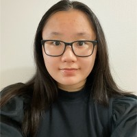

Jordan Leis & Ivy Ngo
Your Candidate Pair for VP Services


Turning Student Needs into Student Services
Your Candidate Pair for VP Services
Two complementary skill-sets, one vision: transforming Engineering Society services to better serve every student.
Electrical Engineering '28
As your EE representative since 2023, I've consistently championed student interests. My two terms as Internal Relations Commissioner gave me deep insight into EngSoc's structure and how to improve collaboration across all portfolios.
Currently serving as Director and Technical Project Manager at WAT.ai, I'm actively improving internal communication between technical teams and executive leadership. I bring real-world experience in coordination, process improvement, and stakeholder management.
Why I'm running: I understand how to bridge the "student voice" and the "organizational process" — exactly what VP Services needs. I'm focused not just on ideas, but on implementation.

Chemical Engineering '28
With two terms as Student Services Commissioner, I've directly supported students through resume critiques, professional photoshoots, and career development initiatives. I know firsthand what services students need and use.
Currently working in a lab converting food waste to plastic, I bring a unique perspective on sustainability and innovation. Originally from Toronto, I understand the diverse needs of our engineering community.
Why I'm running: I've seen the gaps in our current services and I'm ready to fill them. Together with Jordan, we'll deliver services that are modern, accessible, and actually useful for students.
The Waterloo Engineering Society exists to "promote a positive undergraduate experience." We're here to make that promise a reality.
No more searching through decade-old exams. We will build a modern, searchable exam bank with recent materials for every core course.
Transform the Career Fair from just networking to real recruitment with on-site interview opportunities.
Build stronger connections between all engineering groups through formal support and resource sharing.
Sustainability isn't an add-on — it's embedded in everything we do, from event planning to procurement.
Recognizing the intensive demands on engineering students, we'll research and implement wellness spaces on campus.
We don't just have ideas — we have the experience to implement them.
Your voice matters. Share your ideas, submit old exams, or join our campaign.
Together, we'll build services that actually serve you.